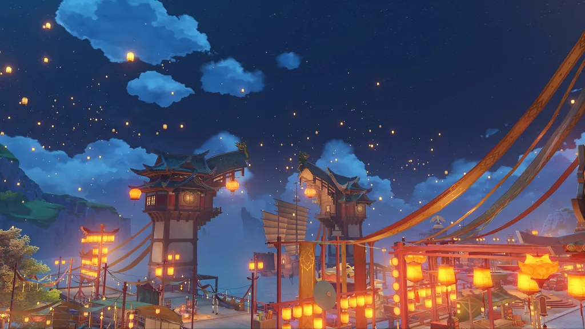
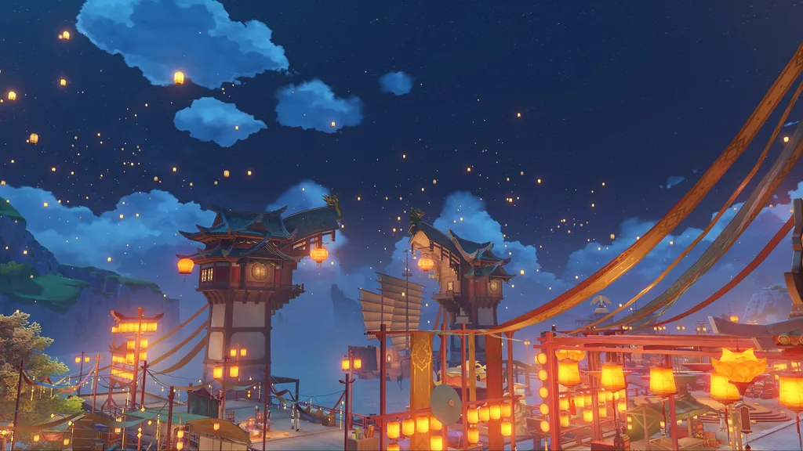

Description
Glaze Moon is set in a fictional country located in the eastern part of the continent of Tiwat, which believes in "Covenants". The guardian is Morax, the God of Rock (also known as the "Emperor of Rock"), a merchant representing seven commercial powers -- the seven stars of the moon of Glaze, who actually controls the country and has eight departments under his command.
Three Eyes and five Xianxian Xianren once made a contract with the rock king Dijun to watch the glaze month, guard the glaze month and supervise the glaze month seven stars for more than 3700 years , but after the end of the second chapter of the game, the fairies gave up the supervision of this power , the rock king Dijun also stepped down , glaze month seven stars fully take over the glaze month , Make the glaze moon completely become the country of "people rule". The country's armed forces, known as the Thousand Rock Army, are organized under the jurisdiction of the General Affairs Department
Glaze moon festivals include Sea Lantern Festival and month by Month Festival. On the night of the first full moon every year, people release "Xiao Deng" and "Ming Xiao Deng" into the night sky. In order to celebrate the autumn festival, Liyue people will add festive decorations to some streets and buildings, and some businesses will set up stalls and hang advertisements to attract customers.
 

Related Photos
{kind=link}
{kind=link}
{kind=link}
| Liyue port | Qing Yun Ding | Qun Yu Ge |
Liyue port is the most abundant and large port in the mainland of Tiwatt, with the largest number of ships. There are thousands of merchant ships entering and leaving every day, which brings a lot of wealth to the people of Liyue
The mountain range to the west of Liyue Port is Tianheng Mountain, which used to be the barrier of Liyue to resist foreign enemies. According to legend, the earliest mining operations of Liyue people were also carried out here . Guyunge is an archipelago located to the east of Liyuegang, which is said to be the forest of steles of the old gods . To the west of Mount Tianheng is Lisha Jiao, where Dun Yu Ling, Ling Jiao Pass and Qinghui Pu are all dilapidated buildings located in Qingtan. To the west of Lisha suburb, there is the main mining area of Liyue in the southwest of Liyue territory, Liyan Giant Yuan